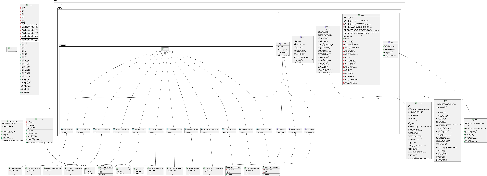

BUAA_OO_第三单元总结 前言 JML的使用让作业的思维难度大大降低，如果仅考虑完成任务上，只需要照葫芦画瓢根据JML写出代码即可，不需要在整体的架构上有自己独一无二的思考。但是，正是由于这一点，给了我五一假期偷懒的机会，导致我在第二次作业的性能上狠狠丢失分数，实乃得不偿失啊。
代码层次总结 JML架构图 
这次架构有了官方包的约束，大家几乎相同，主要差异体现在性能差异上
性能 第一次作业 由于没有假期，测试做的比较足，性能也相对较好
并查集 搜索了很多有关可维护并查集的介绍，但都不太能够达到自己想要的结果，最终干脆按照最常见的思路加上重建解决删边问题。
实现上还是并查集的核心思路：路径压缩+按秩合并来保证查询效率，同时引入cnt记录连通块个数用于后续查询，但是由于并查集并不适用于删除边的操作，但是我又舍不得并查集对是否连接以及连通块个数极其快速的查询效率，于是我又引入了重建并查集的方法，采取缓查询的方法（只有查询连通块个数时才需要判断是否需要重建）
1 2 3 4 5 6 7 8 9 10 11 12 13 public class DisjointSetUnion {private HashMap<Integer, Integer> fa;private HashMap<Integer, Integer> rank;private boolean need2Rebuild;private int cnt;public int getCnt () public void add (int id) public int find (int id) public void merge (int id1, int id2) public boolean isCircle (int id1, int id2) public void rebuild (HashMap<Integer, MyPerson> persons)
性能方面主要涉及以下三个方法
public boolean isCircle(int id1, int id2)
由于实现了并查集，我采用了二者结合，如果并查集没有没有被破坏，直接使用并查集判断id1和id2是否在一起，否则，则采取dfs方式判断路径是否可达（需要重建时，dfs的效率更高）。
public int queryBlockSum()
有了并查集实现就相对简单了，不需要重建时直接实现O（1）的时间复杂度可以说是相当快了。
1 2 dsu.rebuild(persons);return dsu.getCnt();
public int queryTripleSum()
直接暴力O（n^3）的时间复杂度
于是我采用在加边和删边时采用动态维护
1 2 3 4 5 6 7 8 9 10 11 12 for (int id : person1.getAcquaintance().keySet()) {if (isLinked(id, id2) && id != id2 && id != id1 && id1 != id2) {for (int id : person1.getAcquaintance().keySet()) {if (isLinked(id, id2) && id != id2 && id != id1) {
第二次作业 性能主要涉及以下方面
推荐写法如下，内部遍历person1的所有acquaintance而不是直接遍历Tag里的所有person，当tag里是完全图时，明显前面的时间复杂度更低（O（n*log（n）和 O（n^2））），我也栽在了这里
1 2 3 4 5 6 7 8 9 10 11 12 public int getValueSum ()int sum = 0 ;for (int id1 : persons.keySet()) {get (id1);for (int id2 : person1.getAcquaintance().keySet()) {if (persons.containsKey(id2)) {get (id2));return sum;
public int queryBestAcquaintance()和public int queryCoupleSum()
归根到底是动态维护一个bestAcquaintanceid
1 2 3 4 5 6 7 8 9 10 11 12 13 14 if (!needUpdate || value.isEmpty ()) {return bestAcquaintanceId;int max = -0xfffffff ;int ba = this .bestAcquaintanceId ;for (int key : value.keySet ()) {if (value.get (key ) > max || (value.get (key ) == max && key < ba)) {max = value.get (key );key ;this .bestAcquaintanceId = ba;false ;return ba;
其次queryCoupleSum（）也不能暴力for循环，加一个visited数组，然后判断两个人的bestAcquaintanceId是否各为对方的bestAcquaintanceId。
第三次作业 没啥新意，对应建立父类子类关系以及调用接口关系即可，但是JML长的可怕——只得细细品味了。
异常处理 到最后一次作业，总共设计十二个异常处理，区别仅仅在于输出和计数，我实现了一个Counter类进行对每一类异常都进行了计数，现在一想，完全可以抽象为两个方法，但是可读性就没有那么好了。
注意：Counter类一定要是静态变量
Juint测试总结 我采用是的和实验中相同的思路——利用随机数生成指定组随机数据，受限于官方包和评测，由于个人几乎都是用的是HashMap，容器的深克隆只能够通过在构造数据时实现一个一模一样的对象实现。
1 2 3 4 5 6 7 8 9 10 11 12 13 14 15 16 17 18 19 20 21 22 23 24 25 26 27 28 29 30 31 i@RunWith(Parameterized.class) public class MyNetworkTest {private MyNetwork myNetwork;private MyNetwork clone;public MyNetworkTest (MyNetwork myNetwork, MyNetwork clone) {this .myNetwork = myNetwork;this .clone = clone;@Parameters public static Collection prepareData () {long seed = System.currentTimeMillis();Random random = new Random (seed);int testNum = 100 ;new Object [testNum][];for (int i = 0 ;i < testNum; i++) {new Object []{myNetwork, clone};return Arrays.asList(object);@Test public void deleteColdEmojiTest () ;@Test public void queryCoupleSum () ;
数据生成思路
由于仅仅用于测试，数据生成较为简单。
第一次和第二次作业数据生成思路大致相同，尽可能生成完全图，按照生成人、随机加关系、随机改关系的步骤进行。
第三次作业由于只需测试deleteColdEmojiTest()方法，所以只需要建立两个人，按照随机生成信息，若是表情包则储存，在两个人之间不断发送信息（但是不把信息全部发完）
测试思路主要是根据JML语言设置
怎么在Junit测试中实现规格一致性
以deleteColdEmojiTest()方法为例
1 2 3 4 5 6 7 8 9 10 11 12 13 14 15 16 17 18 19 20 21 22 23
JML规格描述中一共存在8个ensure，我们就要尽可能去检查每个ensure，某些在实现中已经默认保证的就无需检查，以下是我的实现
1 2 3 4 5 6 7 8 9 10 11 12 13 14 15 16 17 18 19 20 21 22 23 24 25 26 27 28 29 30 31 32 33 34 35 36 37 38 39 40 41 42 43 44 45 46 47 48 49 50 51 52 53 int limit = random.nextInt(10 ) + 1 ;int [] emojiIdList1 = myNetwork.getEmojiIdList();int [] emojiHeatList1 = myNetwork.getEmojiHeatList();new HashMap <>();for (int i = 0 ;i < emojiIdList1.length; i++) {int size = messageList1.length;int emojiMessagecnt1 = 0 ;for (int i = 0 ;i < messageList1.length; i++) {if (messageList1[i] != null ) {if (messageList1[i].getClass().getName().equals("MyEmojiMessage" )) {int ans = myNetwork.deleteColdEmoji(limit);int [] emojiIdList2 = myNetwork.getEmojiIdList();int [] emojiHeatList2 = myNetwork.getEmojiHeatList();int emojiMessagecnt2 = 0 ;for (int i = 0 ;i < messageList2.length; i++) {if (messageList2[i] != null ) {if (messageList2[i].getClass().getName().equals("MyEmojiMessage" )) {int expect = 0 ;for (int i = 0 ;i < emojiHeatList1.length; i++) {if (emojiHeatList1[i] < limit) {else {for (int i = 0 ;i < messageList2.length; i++) {if (messageList2[i] != null ) {if (messageList2[i].getClass().getName().equals("MyEmojiMessage" )) {MyEmojiMessage mem = (MyEmojiMessage) messageList2[i];if (ha.containsKey(mem.getEmojiId()) && ha.get(mem.getEmojiId()) < limit) {1 ,0 );
如何利用规格信息来更好的设计实现Junit测试?
我将其归纳为以下几条
通过require信息生成对应数据
通过ensure信息测试对应结果
测试 这次作业由于中测数据没有任何参考价值，加上测试平台与本地测试运行时间的差距，做好本地测试尤为重要。
黑箱测试和白箱测试 维基百科对各自定义如下：
黑箱测试 也称功能测试、数据驱动测试或基于规格说明的测试。测试者只知道程序的输入、输出和系统的功能，这是从使用者的角度针对软件的接口、功能及外部结构进行的测试，不考虑程序内部实现逻辑。白箱测试 也称结构测试、逻辑驱动测试或基于程序本身的测试，测试程序内部结构或运行。在白箱测试时，从程序设计语言的角度来设计测试样例。测试者输入数据并验证数据在程序中的流动路径，并确定适当的输出，类似测试电路中的节点。
课程组的测试就是名副其实的黑箱测试，不仅输入输出未知，甚至时间也完全未知。利用他人的评测机也是黑盒测试，尤其是在数据生成的效果不太好时，覆盖率率低，是一种简单但充满随机性的测试
Junit单元测试是一种比较好的也是比较典型的白箱测试，测试数据以及流程清晰，但是大规模测试实现比较难，也比较费事费时。
各类测试的理解
是指对软件的最小功能模块进行测试的方法，实现单个方法的测试，规模小，测试覆盖率高
是指队整个软件用于保证功能测试
进行单元测试后，将各个单元集合起来一起测试
压力测试是指对软件进行高负载和高并发的测试，在本单元的作业中体现在边界数据与大数据卡CTLE
回归测试是在软件系统进行修改或者升级后，重新运行之前的测试用例已验证修改是否引入新的错误或导致原有功能出现错误的方法。这在我们进行迭代remake时用的比较多，把remake后的代码再交一次之前作业的测试
数据构造 本单元的数据的构造主要体现在图的构造，如何构造出更加有效的图是本次作业的核心
随机生成指令时一定遇到生成的图过于稀疏，在进行各类操作时几乎都是异常，这样显然不可取。
于是采用先生成一个完全图再进行各类修边改边，这样就保证了既有稠密的部分又有稀疏的部分。
python的networkx，cyaron，plotly库可以查看生成的图！
分析总结 面向JML书写代码着实很爽，bug定位也容易，但是书写JML和阅读JML并不是容易事情，所以希望未来课程可以有！！！